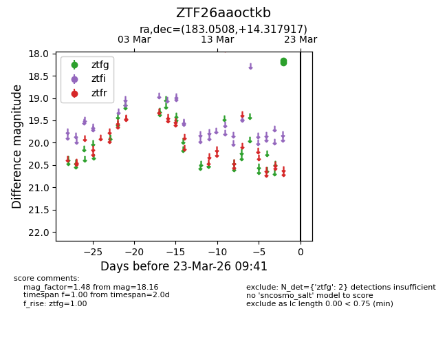
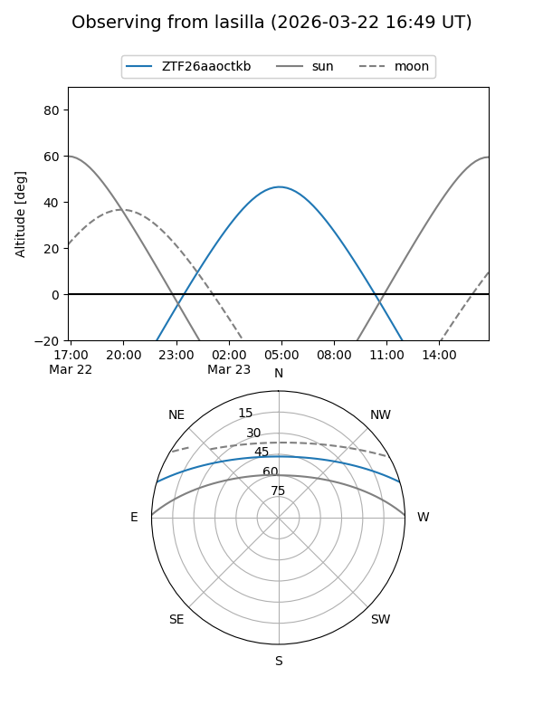
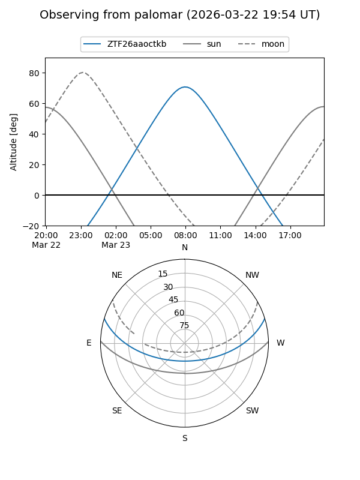

ZTF26aaoctkb
Target ZTF26aaoctkb at 2026-03-23 09:43
Aliases and brokers:
FINK: link
Lasair: link
ALeRCE: link
alt names
ZTF26aaoctkb (ztf,fink_ztf)
Coordinates:
equatorial (ra, dec) = 183.0508,+14.31792
equatorial (HMS+DMS) = 12:12:12.20,+14:19:04.50
galactic (l, b) = (265.4509,+74.26026)
Flags:
Photometry:
last ztfg=18.16
2 ztfg detections
Lightcurve

Visibility


Additional plots